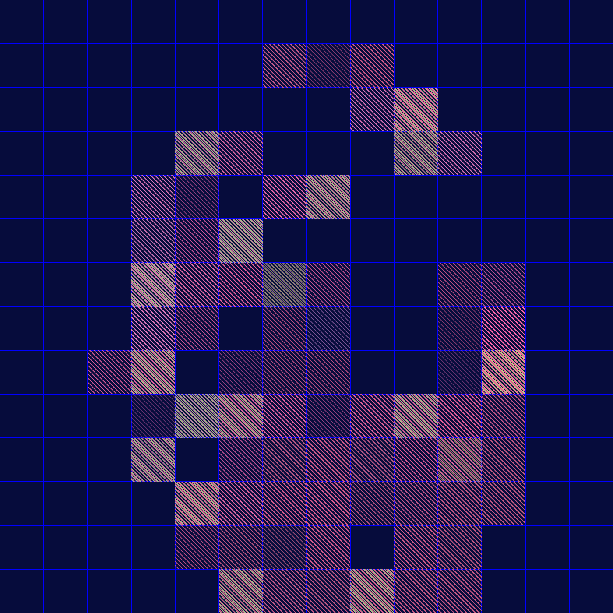
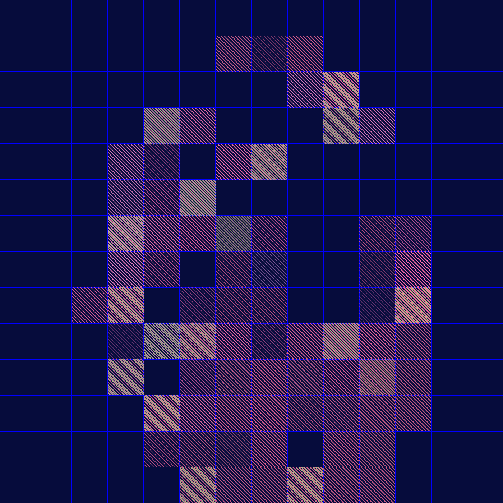
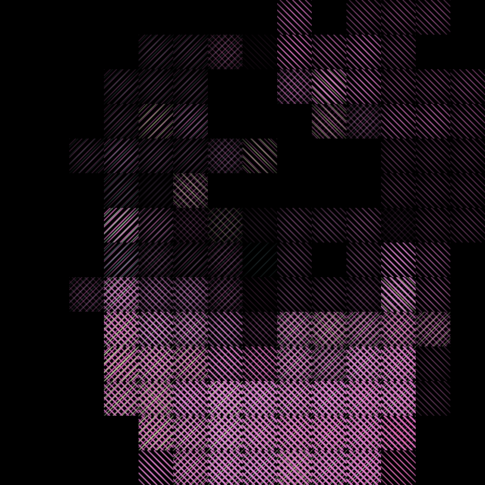
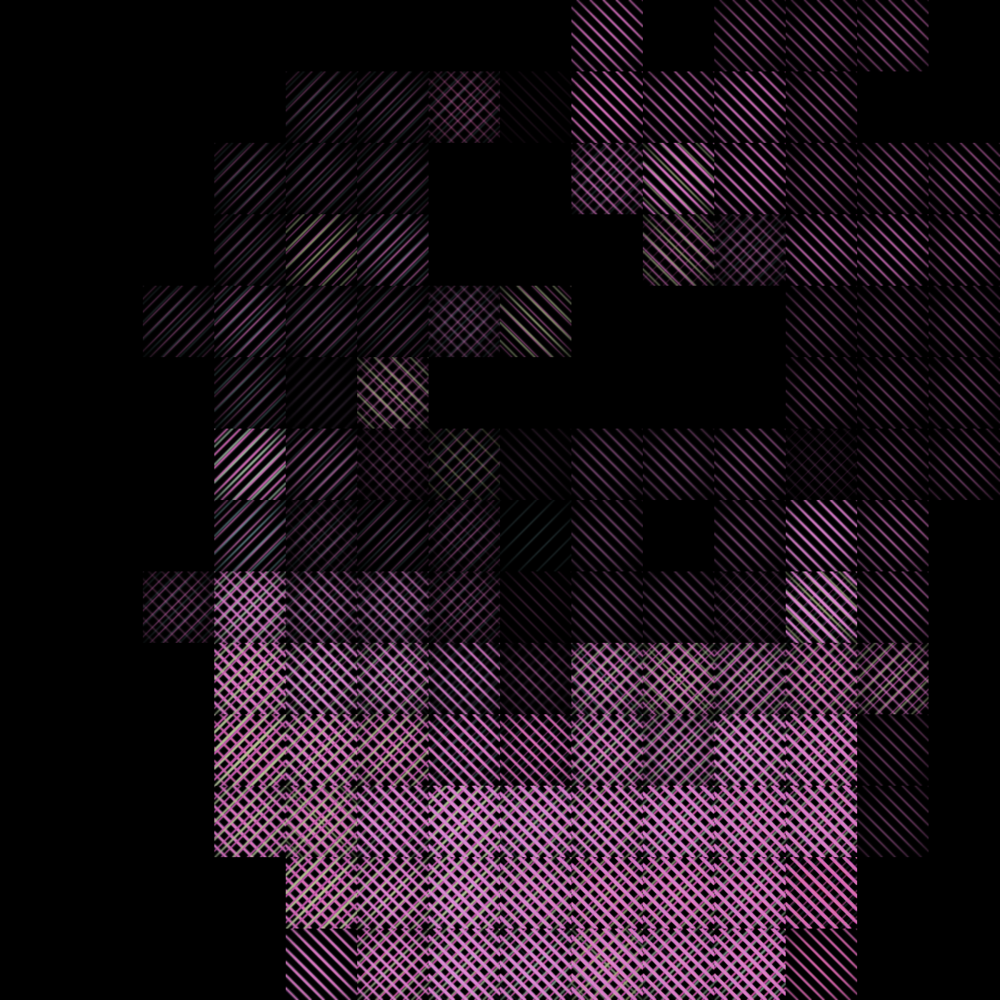

Gestaltungsprozess
Im IDA Modul Digital Design zum Thema Quantified Self beschäftigten wir uns intensiv mit Daten und Daten-Portraits. Besonders interessant fanden wir persöhnliche Projekte die aufschluss über die eigenen Person und Verhaltensmuster geben. Wir waren uns schnell einig eine Arbeit zum Thema «daily me» erstellen zu wollen und damit bestimmte Eigenschaften sichtbar zu machen. Auch fanden wir die Art und Weise der Datenerfassung spannend und damit das Entwickeln und verwenden von individuellen Messsystemen.
Konzeptentwicklung
Im Brainstorming entwickelten wir mehrere Ansätze zu diesen Themen. Auffallend oft kam dabei das Thema «Berührung» zur Sprache. Berührungen und Haptik ist noch immer ein sehr weit gefasster begriff, daher versuchten wir in erstens Skizzen, Mindmaps und Moodboards den abstrakten Begriff zu visualisieren.

Die Visualisierung von Berührungen war eine der grössten Hürden in unserem Projekt. Daher wählten wir diverse Ansätze. Schnell wurde klar, dass dass wir die Berührung von Oberflächenstrukturen sehr unterschiedlich beschreiben und somit eine klare Einordnung von Objekten in «Berührungs-Kategorien» kaum umsetzbar ist.

Patterns
Schlussendlich beschränkten wir uns auf den Ort der Berührung im Gesicht und den Handregionen. Die Visualisierung der jeweiligen Handbereiche wurde zu einer der zentralsten Aufgaben unseres Projekts. Zur Erfassung teilten wir unsere Hände in vordefinierte Bereiche ein. Jeder Handregion wurde eine bestimmte Farbe zugeordnet. Ähnliche Regionen wie die Fingerspitzen sind in derselben Grundfarbe aber mit unterschiedlichen Farbtönen gehalten. Da Berührungen aber auch viel mit dem Gefühl zu tun haben musste eine Lösung gefunden werden, die Haptischen Aspekte der Berührung in die Gestaltung miteinfliessen zu lassen.

Daher entschlossen wir uns mit einfachen Mustern zu arbeiten, die versuchen das Gefühl bei der Berührung in vereinfachter Form wiederzugeben. Wir beschränkten und auf schlichte Raster die je nach Feinfühligkeit der Handregion unterschiedliche Konturbreiten aufweisen. Während die Fingerspitzen sehr feine unterschiede in der Oberflächenbeschaffenheit wahrnehmen, spühren die Handballen eine eher grossflächigere Oberfläche.


Grid Darstellung
Die Wirkung der Patterns veränderte sich nochmals stark in der automatisierten Darstellung im Grid. Daher musste ein Gleichgewicht vom Zufälligkeit und Beeinflussbarkeit gefunden werden um einen optimalen Visuellen Output zu erzielen.

 

 
